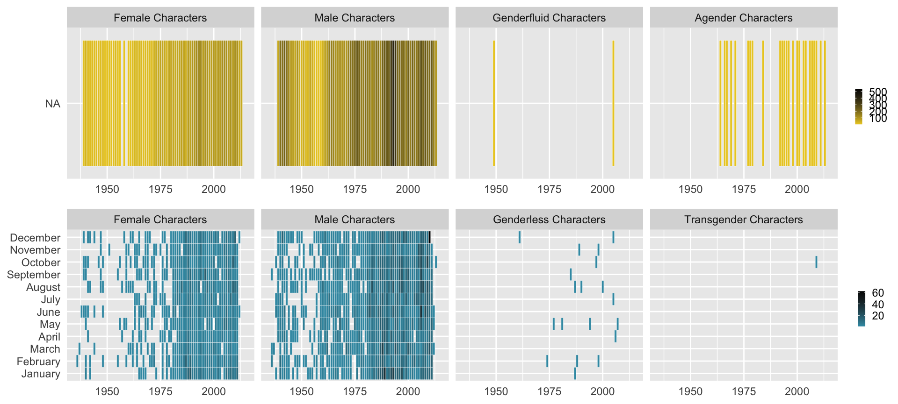
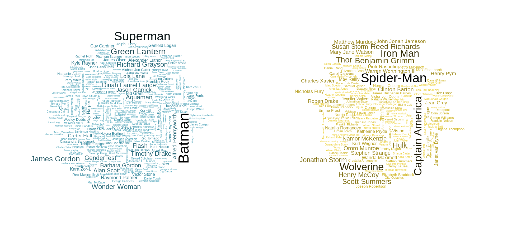

Gender in Comic Books
Jonathan Bouchet
2019-12-10
Source:vignettes/comics_gender.Rmd
comics_gender.RmdThis vignette is based on 538 study : Comic Books Are Still Made By Men, For Men And About Men study about Marvel and DC characters since ~1939 until 2014 (August 24th) and aims at investigating the features of Comic Books characters according their gender / Publisher.
#load packages and csv file
library(fivethirtyeight)
library(ggplot2)
library(dplyr)
library(readr)
library(tidyr)
library(lubridate)
library(janitor)
library(knitr)
library(grid)
library(fmsb)
library(wordcloud)
library(gridExtra)Overview plots
Load full dataset using code in ?comic_characters help file. Note we need to do this since fivethirtyeight::comic_characters only contains a preview of the first 10 rows of the full dataset.
# Get DC characters:
comic_characters_dc <-
"https://github.com/fivethirtyeight/data/raw/master/comic-characters/dc-wikia-data.csv" %>%
read_csv() %>%
clean_names() %>%
mutate(publisher = "DC")
# Get Marvel characters:
comic_characters_marvel <-
"https://github.com/fivethirtyeight/data/raw/master/comic-characters/marvel-wikia-data.csv" %>%
read_csv() %>%
clean_names() %>%
mutate(publisher = "Marvel")
# Merge two dataset and perform further data wrangling:
comic_characters <-
comic_characters_dc %>%
bind_rows(comic_characters_marvel) %>%
separate(first_appearance, c("year2", "month"), ", ", remove = FALSE) %>%
mutate(
# If month was missing, set as January and day as 01:
month = ifelse(is.na(month), "01", month),
day = "01",
# Note some years missing:
date = ymd(paste(year, month, day, sep = "-")),
align = factor(
align,
levels = c("Bad Characters", "Reformed Criminals", "Netural Characters", "Good Characters"),
ordered = TRUE)
) %>%
select(publisher, everything(), -c(year2, day))Overview plots
- percentage of Gender per publisher.
- raw number of characters per publisher.
#calculate raw number and percentage of each gender for each publisher
raw_number_per_publisher <- comic_characters %>%
group_by(publisher) %>%
summarise(number = n()) %>%
arrange(-number)
percent_gen_pub <- comic_characters %>%
group_by(sex, publisher) %>%
summarise(number = n()) %>%
arrange(-number) %>%
group_by(publisher) %>%
mutate(countT = sum(number)) %>%
group_by(sex) %>%
mutate(
percentage = (100*number/countT),
label = paste0(round(percentage, 2)))
#plot percentage of each gender for each publisher
percentage_per_publisher <- ggplot(data = percent_gen_pub,aes(x = sex,y = percentage, fill = publisher)) +
geom_bar(width = 0.9, stat = "identity", position = 'dodge') +
theme(axis.text.x = element_text(angle = 45, hjust = 1),legend.position = 'none') +
geom_text(aes(label = label), position=position_dodge(width = 0.9), vjust = -0.25,size = 2.5) +
scale_fill_manual(values = c("#3B9AB2","#EBCC2A")) +
xlab('') +
ylab('Percentage')
raw_number_per_publisher <- ggplot(data = raw_number_per_publisher, aes(x = publisher, y = number, fill = publisher)) +
geom_bar(width = 0.1, stat = "identity") +
coord_flip() +
scale_fill_manual(values = c("#3B9AB2","#EBCC2A")) +
xlab('') +
ylab('') +
theme(legend.position = 'None')
grid.arrange(percentage_per_publisher, raw_number_per_publisher, ncol=2)
- Marvel has more than the double of number of characters compared to DC.
-
Maleare more present in both publishers compared toFemaleon a ~2.5:1 ratio, whileLGBTcharacters represent less than 1 percent.
Number of Characters vs. Time
#select data with no NA's for sex and date and groupby
#define list of gender per publisher
gender_list_marvel <- c("Female Characters", "Male Characters", "Genderfluid Characters","Agender Characters")
gender_list_dc <- c("Female Characters", "Male Characters", "Genderless Characters","Transgender Characters")
marvel_vs_time <- comic_characters %>%
filter(publisher == 'Marvel' & !is.na(month) & !is.na(sex)) %>%
group_by(year, month, sex) %>%
summarise(number = n()) %>%
mutate(
sex_ordered = factor(sex, levels = gender_list_marvel),
month_ordered = factor(month, levels = month.name))
dc_vs_time <- comic_characters %>%
filter(publisher == 'DC' & month!= "Holiday" & !is.na(month) & !is.na(sex)) %>%
mutate(month = ifelse(month=="01","January",month)) %>%
group_by(year, month, sex) %>% summarise(number = n()) %>%
mutate(
sex_ordered = factor(sex, levels = gender_list_dc),
month_ordered = factor(month, levels = month.name))
plot_marvel_time <- ggplot(data = marvel_vs_time, aes(year, month_ordered)) +
geom_tile(aes(fill = number),colour = "white") +
scale_fill_gradient(low = "#EBCC2A", high = "black") +
facet_wrap(~ sex_ordered, ncol = 4) +
theme(axis.title.x = element_blank(), axis.ticks.x = element_blank(), axis.title.y = element_blank(), axis.ticks.y = element_blank(), legend.position = 'right', legend.title = element_blank(), legend.key.size = unit(.2, "cm")) +
xlim(1935,2015)
plot_dc_time <- ggplot(data = dc_vs_time, aes(year, month_ordered)) + geom_tile(aes(fill = number),colour = "white") +
scale_fill_gradient(low = "#3B9AB2", high = "black") +
facet_wrap(~ sex_ordered, ncol = 4) +
theme(axis.title.x = element_blank() ,axis.ticks.x = element_blank(), axis.title.y = element_blank(), axis.ticks.y = element_blank(), legend.position = 'right', legend.title = element_blank(), legend.key.size = unit(.2, "cm")) +
xlim(1935,2015)
grid.arrange(rbind(ggplotGrob(plot_marvel_time), ggplotGrob(plot_dc_time), size = "last"))
- Most of the characters are either
FemaleorMalefor both publishers. - There is a gap in character’s creation (for both publishers) ~1955-1960.
- The increase in
Femalecharacters appear early for Marvel (~1970) while it was in the late 70’s for DC comics. -
LGBTcharacters appear in the late 70’s (DC) and in the late 60’s (Marvel).
Characteristics per Gender, publisher
To represent the average characteristics, radarchart will be used.
- Characteristics looked at are :
id,align,eye,hairandalive. - the idea is to group the rows by these features and compute their mean
- later by taking the higher percentage, we can deduce a
profilerepresentative of each publisher.
example: vs Hair feature
#function to aggregate data by (gender, feature, publisher)
aggregateFeature <- function(current_publisher, feature){
#empty list to keep dataframe by (gender, feature)
currentFeature <- list()
if(current_publisher == 'Marvel'){
gender_list <- gender_list_marvel
} else {
gender_list <- gender_list_dc
}
for(i in 1:length(gender_list)){
currentFeature[[i]] <- comic_characters %>%
filter(publisher == current_publisher ) %>%
select(hair, sex) %>%
na.omit() %>%
group_by(hair) %>%
filter(sex == gender_list[i]) %>%
summarise(number = n()) %>%
arrange(-number) %>%
mutate(countT = sum(number)) %>%
mutate(percentage = round(100*number/countT,1)) %>%
select(hair, percentage, number)
if(current_publisher == 'Marvel'){
colnames(currentFeature[[i]])[2]<-'percentage_marvel'
} else{
colnames(currentFeature[[i]])[2]<-'percentage_dc'
}
if(feature == 'hair'){
#strip 'hair' word for better display of the radarchart
currentFeature[[i]]$hair <- sapply(currentFeature[[i]]$hair, function(x) gsub(' Hair','', x))}
}
names(currentFeature) <- gender_list
return(currentFeature)
}#outer join the 2 dataframes for (feature=Hair, gender=Male)
merged <- full_join(aggregateFeature('DC','hair')[[2]], aggregateFeature('Marvel','hair')[[2]], by='hair')
#set min/max percentages for the radarchart limits
min <- rep(0, length(merged$hair))
max <- rep(50, length(merged$hair))
maleHair <- data.frame(rbind(max,min,merged$percentage_dc,merged$percentage_marvel))
colnames(maleHair) <- merged$hair
row.names(maleHair) <- c('max','min','percentage_dc','percentage_marvel')
maleHair[is.na(maleHair)] <- 0#cosmetics
radarchart(maleHair, #dataframe
axistype=2, #axis type
pcol=c("#3B9AB2", "#EBCC2A"), #color -Wes Anderson Sissou-
plwd=1, #axis line width
pty=19, #marker type
plty=3, #line type
cglcol="grey", #axis line color
cglty=2, #axis line type
axislabcol="grey", #Color of axis label
cglwd=.6, #line type
vlcex=.6, #font size label
palcex=1.) #font size value
legend(x=1, y=1.3, #position
legend = c('DC male characters','Marvel male characters'),#labels
bty="n", #no window
pch=16, #marker type
text.col = "black", #label colors
col=c("#3B9AB2","#EBCC2A"), #marker color
cex=.8, #marker size
pt.cex=1) #font size
Popularity
By looking at the number of appearances for each characters, we can make a visualization (wordcloud) representing the most popular characters.
#remove NA from appearance column, keep only the name inside parentheses
marvel_appearances <- comic_characters %>%
filter(publisher == 'Marvel') %>%
select(name, appearances) %>% na.omit() %>%
mutate(name = gsub(" *\\(.*?\\) *", "", name))
dc_appearances <- comic_characters %>%
filter(publisher == 'DC') %>%
select(name, appearances) %>% na.omit() %>%
mutate(name = gsub(" *\\(.*?\\) *", "", name))
color_marvel <- colorRampPalette(c("#EBCC2A", "black"))
color_dc <- colorRampPalette(c("#3B9AB2", "black"))
op <- par(mar = c(1, 2, 2, 1), mfrow = c(1, 2))
wordcloud(dc_appearances$name, dc_appearances$appearances, min.freq = 100, colors = color_dc(10), scale = c(1.75, 0.2))
wordcloud(marvel_appearances$name, marvel_appearances$appearances, min.freq = 250, colors = color_marvel(10), scale = c(1.5, 0.2))
-
Batman(DC) andSpider-Man(Marvel) ends up being the characters with the most appearances.